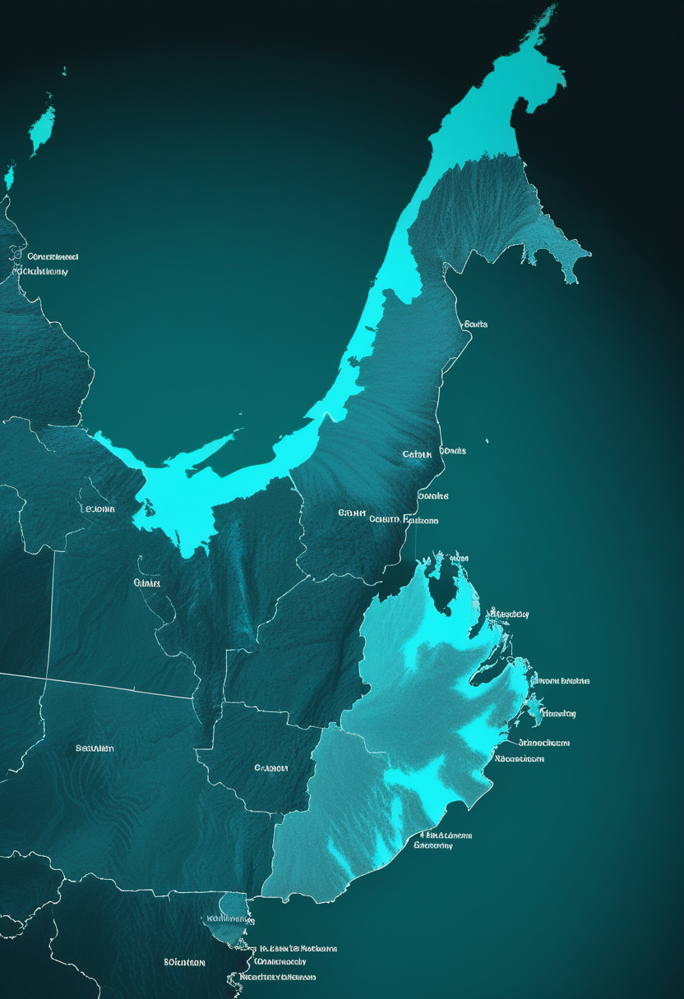
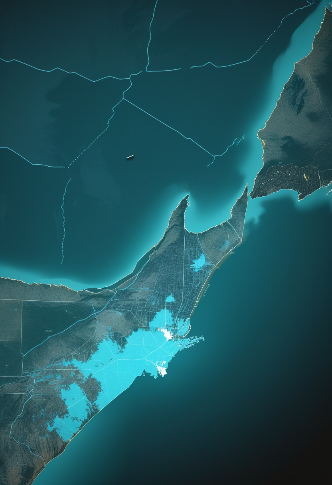
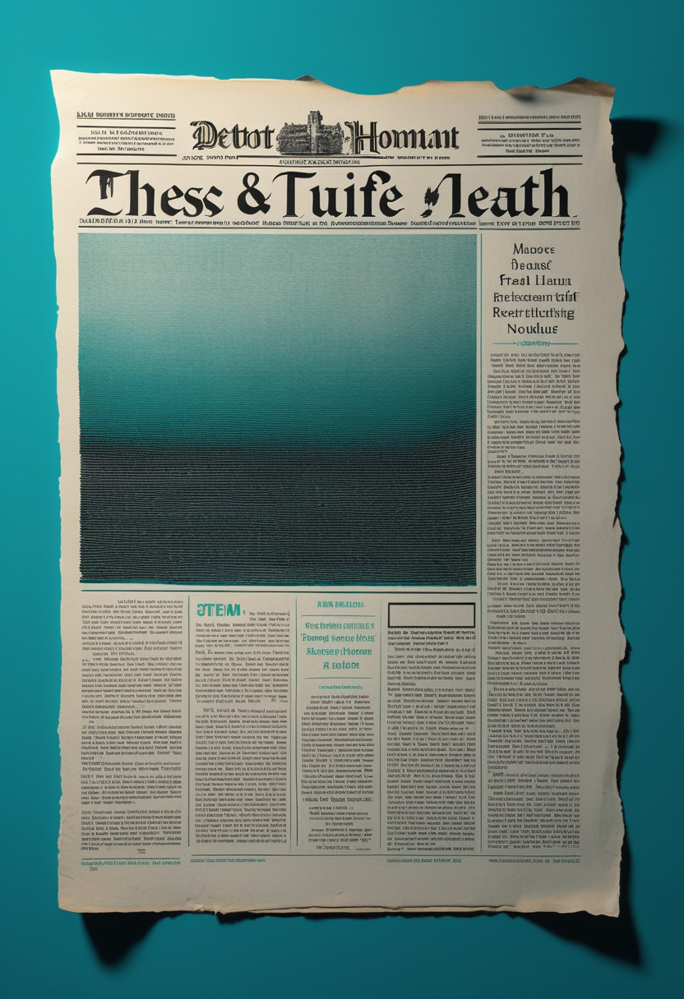

土曜日の便り。アフリカCDCのカセヤ事務局長は、DRCを中心に広がるエボラについて確定10,172例・死亡4,932人・回復2,727人(致死率48.5%)という集計を示し、流行の中心が移りつつあると警告した。10/30号で届けた閣僚会合の合意内容に続き、医療従事者の感染や国境を越えてすり抜ける感染、未承認薬への依存を課題として挙げている。基盤の章ではこれに加え、米国の麻疹でペンシルベニア州の郡別集計が判明したことと、前号で伝えたワシントン州のH5N1感染情報が誤配信の疑いで訂正されたことを届ける。自由の章では、NeuralinkがTelepathyを最初の製品と位置づけ治験参加者が思考でAIを操作したデモを公開したことと、視線入力・AAC機器のDynavox Groupが増収増益の決算を発表したことを。命の章では、北アイルランドの母親がSMA新生児スクリーニングの地域差を訴えたことを届ける。畏敬の章では、JWSTが恒星間彗星3I/ATLASの氷を観測したことと、中国の研究チームが許家窯人をタンパク質解析でデニソワ人と特定したこと、独ユーリッヒ研究所の超高速量子ゲートを。美の章では、ニューヨーク州とオーストラリアが相次いで子ども向けAIコンパニオンを規制したことを取り上げる。
10/30号の続報 ― 前号ではアフリカCDC閣僚会合の合意内容(確定10,172例・死亡4,932人、国境は開けたまま監視を強化)までを届けた。今回新たに判明したのは、致死率48.5%・回復2,727人という内訳と、カセヤ事務局長が『流行の中心が移動している』と述べたこと。医療従事者への感染、監視や接触者追跡をすり抜けた国境越えの感染、そして承認済みのワクチンや治療薬が無く寄付された未承認薬に頼らざるを得ない状況を、重大な課題として挙げている。症例の数を追う段階から、どこに重心が移り、誰が感染のリスクを負っているかを読む段階へ、報道の焦点も移ってきた。

イングランドでは10月からSMAの新生児スクリーニングの実地評価が始まり、スコットランドも3月から独自に運用している。一方、北アイルランドとウェールズには現時点で導入計画がない。ベルファストのキャサリン・シンプソンさんは、息子エズラ君が乳児期につかまり立ちをしようとしない様子を保健師に伝えていたと振り返り、『なぜ北アイルランドのかかと採血検査にSMAが入らないのか』と訴えた。慈善団体は2028年までに英国内の全ての新生児を検査対象にするよう求めている。
イングランドの評価事業が前進するほど、検査を受けられない地域との差は際立つ。『生まれた場所で早期発見の機会が変わる』という課題は、制度が進むたびに繰り返し問われている。
Neuralink創業者のイーロン・マスク氏は10月30日、同社の最初の製品が『Telepathy』であり、考えるだけでコンピュータや人と高速にやり取りできると投稿した。同日、治験参加者が思考だけでAIのGrokを操作したり、iPhoneで通話したりするデモも共有された。Telepathyは1,024電極・64本の糸状電極を持つN1インプラントを使う。ただし米FDAの商用承認はまだで、価格や発売時期は示されていない。
視線入力コミュニケーション機器Tobii Dynavoxなどを傘下に持つスウェーデンのDynavox Groupは10月21日、第3四半期決算を発表した。売上高はSEK6億8,500万(前年同期SEK6億600万)で前年比+13%(為替調整後+15%)。EBITDAはSEK1億7,500万で前年同期のSEK1億2,200万から+43.4%、EBITマージンは17.4%に達した。CEOのフレドリック・ルーベン氏は、米国での保険償還手続きの厳格化という逆風がある中でも『着実な増収と大きく強まった収益性』の四半期だったと述べた。1〜9月累計の売上高はSEK19億4,200万(前年同期比+9%)。
Neuralinkは埋め込み型の『製品化宣言』で一歩踏み出し、視線入力・AAC機器の会社は地道な増収増益で応える。意思伝達の未来は、まだ一つの技術に絞られていない。

アフリカCDCのジャン・カセヤ事務局長は、DRCを中心に広がるブンディブギョ型エボラについて、確定10,172例・死亡4,932人・回復2,727人(致死率48.5%)という集計を示し、流行の中心(震源地)が移りつつあると警告した。10/28の閣僚会合で示された合意内容(国境は開けたまま監視を強める)に続き、今回は医療従事者への感染、監視や接触者追跡をすり抜けた国境越えの感染、そして承認済みのワクチンや治療薬が無く寄付された未承認薬に頼らざるを得ない状況を、重大な課題として挙げた。症例はDRCのほか、ケニア(9例)とナイジェリア(1例)でも報告されている。
米CDCの集計では10月22日時点で、今年の麻疹確定例は4,588件(前週比+178件、+4.0%)。96%(4,404件)が集団発生に関連し、2026年の新たな集団発生は43件に上る。最も症例が多いペンシルベニア州では、10月25日時点で44郡にわたり少なくとも1,338例が確認されたと州保健局が報じられている。10月30日時点でさらに増えたとの報道もあるが、最新値は要確認。

10月23日号でECDC(10月15日付報告)を出典に伝えた、米ワシントン州ヤキマ郡の住民の乳牛接触によるH5N1感染について、10月28日付の感染症ニュースレター(Pathogen Update)が『2024年10月の記事が誤って流通したものだった可能性がある』と指摘し、記述を取り下げた。州またはCDCの一次情報で改めて確認できるまで、前号の記述は要確認として扱う。国外では、二次情報としてバングラデシュで3例目、カンボジアで新たなヒト感染が報じられているが、これも一次情報での確認が済んでいない。
エボラは数を数える段階から、どこに重心が移るかを読む段階へ進んだ。麻疹とH5N1は対照的に、集計の粒度を上げること(麻疹)と、誤った情報を取り下げること(H5N1)という、地味だが欠かせない『裏取り』の大切さを示した。
米サウスウェスト研究所(SwRI)のシルビア・プロトパパ氏らは、JWSTの近赤外分光器NIRSpecで恒星間彗星3I/ATLASを3回(2025年8月6日・12月22日、2026年4月1日)観測した。氷の粒子は数マイクロメートル以下で、水の氷と岩石質の物質が混ざっていた。そのスペクトルは太陽系の彗星より、海王星以遠の氷天体に近いという。粒の大きさは太陽系の彗星と同程度だが、『氷に混ざる塵の量』が異なるとみられる。恒星間天体は他の恒星系の材料見本であり、太陽系外縁と似ていたことは、惑星系の材料に共通点がある可能性を示す。
中国科学院古脊椎動物・古人類研究所などのチームは、中国・許家窯遺跡の人類化石(頭骨片と下あご)から18種類の古代タンパク質を検出し、デニソワ人と特定した(Nature、10月21日オンライン公開)。決め手はコラーゲン遺伝子COL1A2の変異で、現生人類やネアンデルタール人では見つかっていない。年代は約13万年前〜13万8,000〜19万9,000年前と報道により幅がある。比較対象となるデニソワ人の標本がまだ少ない点を指摘する声もあるが、DNAが残らないほど古い化石にも、タンパク質解析なら迫れることを示した成果だ。
独ユーリッヒ研究所・アーヘン工科大学・ケルン大学の研究者は、超伝導量子ビット(トランズモン)1個で、6.8ナノ秒・忠実度99.98%超の単一量子ビット操作を実現した。新しいパルス整形法『R2D』により、望まない多光子遷移を標準手法DRAGより20倍以上減らしたという。ただし試験は孤立した量子ビット1個のみで、大規模なプロセッサや2量子ビット操作での性能は今後の課題となる。
恒星間彗星の氷、13万年前の頭骨に残るタンパク質、6.8ナノ秒の量子操作 ― スケールはまるで違うが、どれも『そこにある情報をどれだけ精密に読み取れるか』を競う仕事だ。
ニューヨーク州のキャシー・ホークル知事は10月28日、未成年に『危険なAIコンパニオン機能』12項目の提供を禁じる法(S9051-B/A10379-C)に署名した。人間だと思わせる出力、へつらい・お世辞、感情的な依存をあおる機能、以前の会話で聞いた子どもの健康情報を持ち出す機能などが対象となる。違反には州司法長官が訴訟を起こせ、損害賠償やチャットボットの停止、データ削除もあり得る。施行日は報道により差があり要確認。
オーストラリア下院は10月28日、SNS・ゲーム・アプリ・AIチャットボットに包括的な『デジタル注意義務』を課す法案を可決した。チャットボットが子どもと感情的な親密さを築くことを害として扱う修正(無所属のケイト・チェイニー議員提案)を政府が受け入れた。罰金の上限は報道により約1億800万〜1億920万豪ドルと幅がある。上院での成立は緑の党などの賛否次第で、政府は年内成立を目指す。
ニューヨークとオーストラリアは、互いに参照し合ったわけではないのに同じ週に『AIが子どもと親密になりすぎること』を規制した。人とAIの境界線を引く作業が、同時多発的に動き始めている。
土曜日の便り。アフリカCDCは、DRCを中心に広がるエボラが確定10,172例・死亡4,932人・回復2,727人(致死率48.5%)に達したとし、流行の中心が移りつつあると警告した。医療従事者への感染や国境を越えてすり抜ける感染、未承認薬への依存が課題として挙げられている。基盤の章ではこれに加え、米国の麻疹でペンシルベニア州の郡別集計(44郡・1,338例)が判明したことと、前号で伝えたワシントン州のH5N1感染情報を誤配信の疑いで訂正したことを届けた。自由の章では、NeuralinkがTelepathyを最初の製品と位置づけ治験参加者が思考でAIを操作するデモを公開したことと、視線入力・AAC機器のDynavox Groupが増収増益の決算(EBITDA+43.4%)を発表したことを伝えた。命の章では、北アイルランドの母キャサリン・シンプソンさんが、SMA新生児スクリーニングの地域差を公の場で訴えたことを届けた。畏敬の章では、JWSTが恒星間彗星3I/ATLASの氷を観測し海王星以遠の天体に似た組成を示したことと、中国の研究チームが18種類の古代タンパク質から許家窯人をデニソワ人と特定したこと、独ユーリッヒ研究所などが6.8ナノ秒・忠実度99.98%超の超高速量子ゲートを実現したことを取り上げた。美の章では、ニューヨーク州とオーストラリア下院が、子どもと感情的な親密さを築くAIチャットボットを相次いで規制したことを伝えた。
では、また明日の朝に。 — JaH